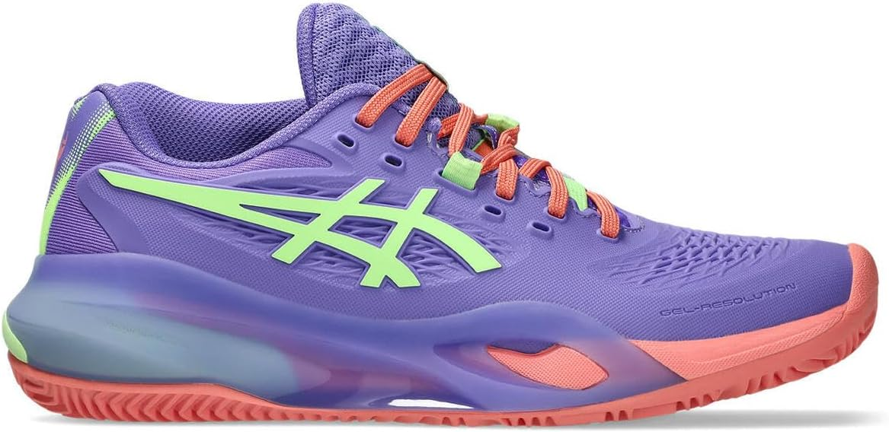

Pourquoi jouer au padel avec des chaussures de running est une (très) mauvaise idée

Quand on débute, on pense souvent et logiquement à investir dans une bonne raquette de padel, mais on néglige ce qui nous relie au sol. Au padel, les déplacements sont courts, explosifs, remplis de rotations et de freinages brusques sur un gazon synthétique souvent sablé.
❌ Pourquoi les chaussures de running sont moins adaptées aux déplacements latéraux
Les baskets de course (running) sont conçues exclusivement pour un mouvement linéaire vers l'avant. Leurs semelles sont lisses ou équipées de crampons épais pour la terre. Au padel, porter des running bloque littéralement le bord du pied dans le gazon synthétique lors d'un changement de direction latéral. Résultat : la chaussure s'arrête, mais votre genou et votre cheville continuent de tourner par inertie. C'est la cause numéro un des entorses et des ruptures des ligaments croisés chez les joueurs amateurs.
Publicité responsive intégrée
Le secret réside dans la semelle
Il existe aujourd'hui trois grands types de semelles adaptées aux terrains de padel. Le choix dépend énormément de la quantité de sable présente en surface sur les courts de votre club habituel.
Schéma : Les 3 grands types de semelles utilisés au padel.
1. La semelle Chevron (Clay) : L'adhérence maximale
Empruntée directement aux chaussures de tennis sur terre battue, c'est historiquement la semelle la plus vendue. Elle est composée de profonds motifs en zig-zag. Elle évacue parfaitement le sable et permet de glisser en contrôle sans jamais déraper de manière incontrôlée ni se bloquer net.
- Idéal pour : Les terrains dits "anciens" (très sablés en surface, souvent extérieurs).
2. La semelle Omni (Picots) : La mobilité explosive
Cette semelle est recouverte de multiples petits points (picots) très denses. Elle offre une accroche ultra-mordante sur les terrains modernes (le fameux gazon synthétique style "World Padel Tour" sans sable apparent en surface). En revanche, sur un terrain classique rempli de sable, elle glissera un peu trop.
- Idéal pour : Les moquettes de nouvelle génération très adhérentes (souvent en indoor).
3. La semelle Mixte : Le compromis parfait et moderne
De nombreuses marques spécialisées proposent désormais des semelles combinant intelligemment les deux mondes : des chevrons sur les zones de poussée arrière, et des picots sur les zones de rotation avant. Elles intègrent presque toujours des points de pivot circulaires pour faciliter les tours sur soi-même, un mouvement indispensable au padel pour jouer avec le rebond des vitres.
💡 L'astuce longévité : Protéger l'intérieur du pied
Le padel use énormément l'intérieur de la chaussure (au niveau du gros orteil de votre pied d'appui) à cause des glissades répétées lors des défenses basses. Vérifiez toujours que le modèle choisi possède un renfort épais en caoutchouc ou en plastique dur sur la pointe et le côté intérieur pour éviter de les trouer en un mois !
Nos 3 recommandations "Entrée de gamme" à petit prix
Pas besoin de vous ruiner pour débuter en toute sécurité. Voici les meilleurs rapports qualité/prix du marché classés par type de semelle :
Asics Gel-Dedicate Clay
L'entrée de gamme increvable d'Asics. Idéale pour les terrains très sablés grâce à ses chevrons profonds. Un maintien sécurisant pour vos chevilles.
🛒 Voir sur AmazonBullpadel Beker
Le savoir-faire de la marque 100% padel à petit prix. Une semelle à picots parfaite pour accrocher solidement sur les moquettes modernes sans sable.
🛒 Voir sur AmazonHead Revolt Court
Un excellent compromis hybride doté d'une tige respirante. Idéale pour les joueurs polyvalents évoluant sur différents types de terrains.
🛒 Voir sur AmazonL'investissement Premium pour vos articulations

Asics Gel-Resolution Padel
Ce modèle constitue une option haut de gamme appréciée pour son amorti et sa semelle adaptée aux déplacements multidirectionnels. Le confort, le maintien et l’adhérence restent toutefois personnels : essayez la pointure et vérifiez l’adéquation avec la surface de jeu avant l’achat.
🛒 Voir les tailles et les prix sur Amazon